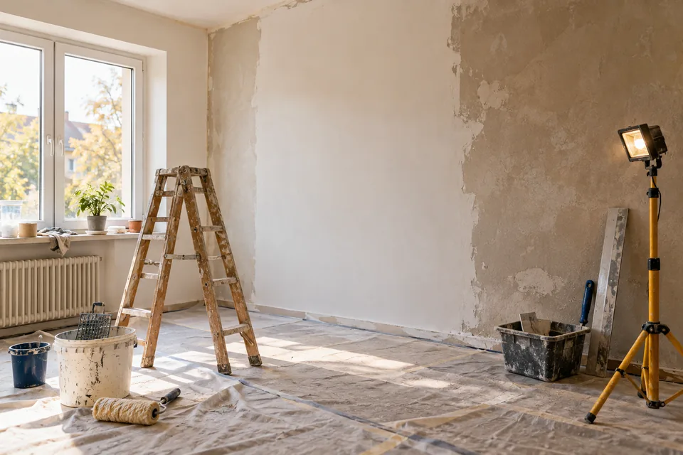
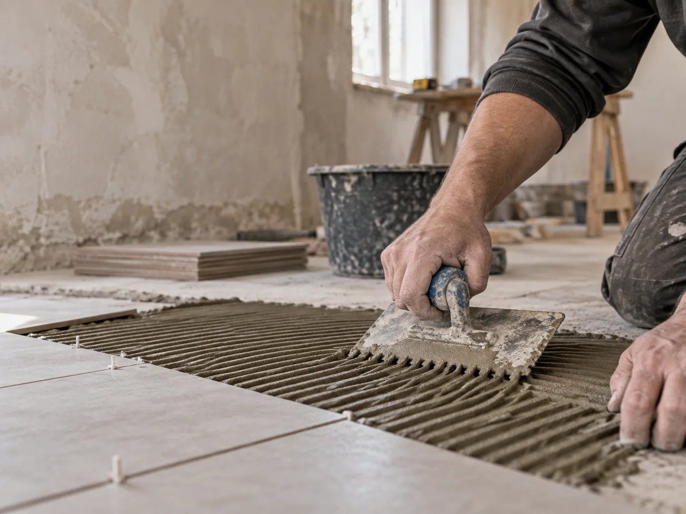
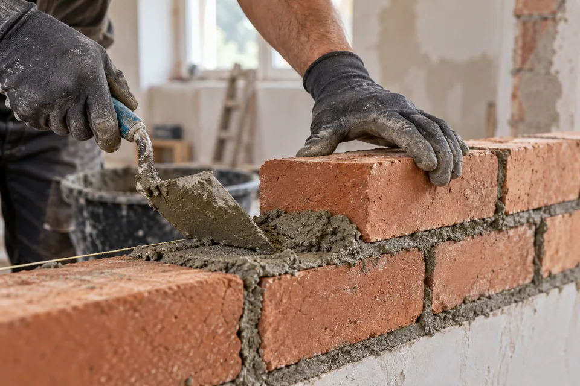
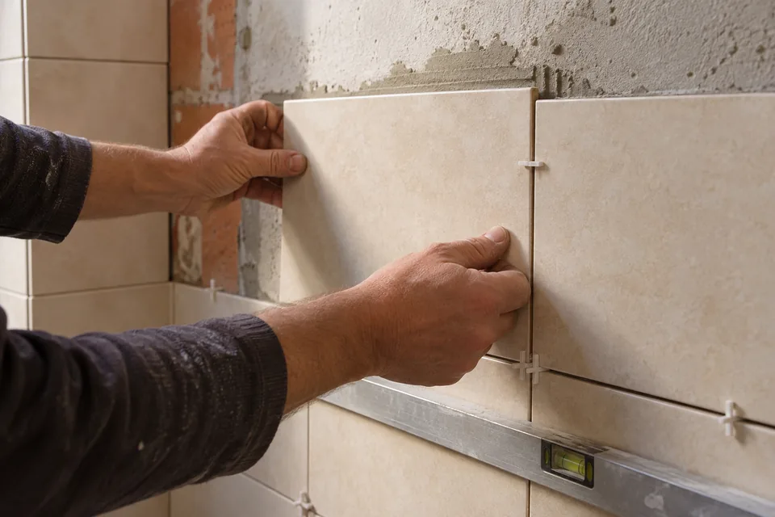

Rekonstrukce
Byty, domy a bytová jádra.
Rekonstrukce · zednictví · obklady
Zednické práce, rekonstrukce bytů, domů a bytových jader, obklady a dlažby v Hradci Králové a okolí.
Fotografie můžete přiložit přímo do e-mailu.

Práce, se kterými se na mě můžete obrátit
Napište nebo zavolejte, co potřebujete řešit. Rozsah práce a možnosti realizace domluvíme podle konkrétní zakázky.

Byty, domy a bytová jádra.

Stavební a zednické úpravy podle konkrétního rozsahu.

Obkladačské práce, dlažby a podlahy.
Fotografie jsou ilustrační. Skutečné realizace doplníme po dodání podkladů.
Prostor pro skutečné ukázky zakázek
Fotografie připravujeme. Po jejich doplnění tu budou skutečné proměny jednotlivých zakázek.
Místo pro fotografie konkrétní realizace.
Místo pro fotografie před a po.
Místo pro fotografie průběhu a výsledku.
Poptávka bez zbytečného zdržování
Do e-mailu napište základní představu a připojte fotografie současného stavu. Podle nich se dá lépe navázat další domluva.
Připravit e-mailovou poptávkuCo uvést do zprávy
Hradec Králové a okolí
Zavolejte nebo pošlete stručný e-mail. Zakázky mimo Hradec Králové jsou možné po individuální domluvě.
Pospíšilova 1155/33
500 03 Hradec Králové